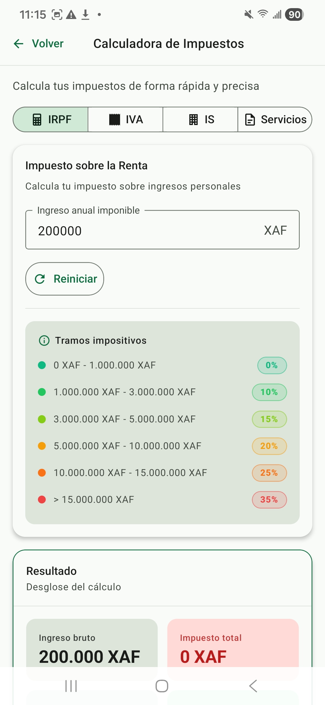

Calculadora fiscal
Simule sus impuestos antes de declararlos. La calculadora cubre 4 categorías: IRPF (impuesto sobre la renta de personas físicas), IVA (impuesto sobre el valor añadido), IS (impuesto de sociedades) y servicios fiscales específicos. Sin necesidad de iniciar sesión.
1. Acceder a la calculadora
Desde la pantalla de bienvenida, pulse la tarjeta «Calculadora». La calculadora se compone de 4 pestañas: IRPF, IVA, IS, Servicios. Cada pestaña le pide los datos necesarios y muestra el cálculo automáticamente.

2. IRPF — Impuesto sobre la renta de personas físicas
El IRPF se calcula con 6 tramos progresivos: cuanto mayor es su renta anual, mayor es el tipo aplicable a la parte que supera cada umbral. Solo las cantidades dentro de cada tramo soportan el tipo correspondiente.
Tabla oficial de tramos IRPF (Guinea Ecuatorial)
| Tramo | Renta anual (XAF) | Tipo |
|---|---|---|
| 1 | 0 – 1 000 000 | 0 % |
| 2 | 1 000 001 – 3 000 000 | 10 % |
| 3 | 3 000 001 – 5 000 000 | 15 % |
| 4 | 5 000 001 – 10 000 000 | 20 % |
| 5 | 10 000 001 – 15 000 000 | 25 % |
| 6 | > 15 000 000 | 35 % |
Ejemplo de cálculo
Para una renta anual de 4 000 000 XAF:
Tramo 1 (0–1M) : 1 000 000 × 0% = 0 XAF
Tramo 2 (1M–3M) : 2 000 000 × 10% = 200 000 XAF
Tramo 3 (3M–4M parcial): 1 000 000 × 15% = 150 000 XAF
─────────
TOTAL IRPF anual = 350 000 XAF
Tipo efectivo = 8,75%3. IVA — Impuesto sobre el valor añadido
El IVA es un impuesto flat al 15% sobre la mayoría de los bienes y servicios en Guinea Ecuatorial. La calculadora ofrece 2 modos:
- Añadir IVA (precio sin IVA → precio con IVA):
precio_con_iva = precio_sin_iva × 1,15 - Extraer IVA (precio con IVA → precio sin IVA):
precio_sin_iva = precio_con_iva / 1,15
Ejemplos
Añadir IVA : 1 000 000 XAF (sin IVA) → 1 150 000 XAF (con IVA), IVA = 150 000
Extraer IVA : 1 150 000 XAF (con IVA) → 1 000 000 XAF (sin IVA), IVA = 150 0004. IS — Impuesto de sociedades
El IS se aplica al beneficio neto de las sociedades a un tipo único de 35%. Fórmula:
IS = (Ingresos − Gastos deducibles) × 35%Ejemplo
Ingresos : 50 000 000 XAF
Gastos deducibles : 35 000 000 XAF
─────────────
Beneficio neto : 15 000 000 XAF
IS (35%) : 5 250 000 XAF5. Servicios fiscales (formulas específicas)
Algunos trámites se calculan con fórmulas específicas, no con un tipo único. Categorías principales:
| Tipo de servicio | Fórmula | Ejemplo |
|---|---|---|
| Expedición fija | tasa = T | Pasaporte = 50 000 XAF |
| Renovación fija | tasa = R | Renovación carnet = 25 000 XAF |
| Porcentaje sobre base | tasa = B × t% | Inspección 1% sobre el valor declarado |
| Por unidad | tasa = U × p | U folios × 5 000 XAF/folio |
| Tarifas escalonadas | tramos progresivos | Licencia comercial según tier (A/B/C/D) |
| Fórmula avanzada | tasa = RF + t × CA / 100 | Canon = Royalty fijo + porcentaje sobre la cifra de negocio |
| Fijo + por unidad | tasa = F + U × p | Tasa base + folios suplementarios |
La calculadora le pregunta los datos según el tipo de servicio elegido. Los cálculos siguen la misma lógica que las facturas oficiales del Tesoro Público — el resultado es indicativo y se confirma cuando inicia la solicitud (ver Iniciar trámite).
6. Limitaciones de la calculadora
- Indicativa — el resultado es una estimación basada en las tarifas oficiales vigentes. Las cantidades reales pueden incluir tasas suplementarias (timbres, servicios urgentes, suplementos por trámite a distancia).
- Sin descuentos personales — la calculadora no tiene en cuenta deducciones individuales (familia numerosa, primera vivienda, donaciones a entidades reconocidas).
- Sin garantía legal — los cálculos no constituyen un cálculo oficial. Para una declaración legal, consulte con un contable autorizado o utilice el formulario oficial.